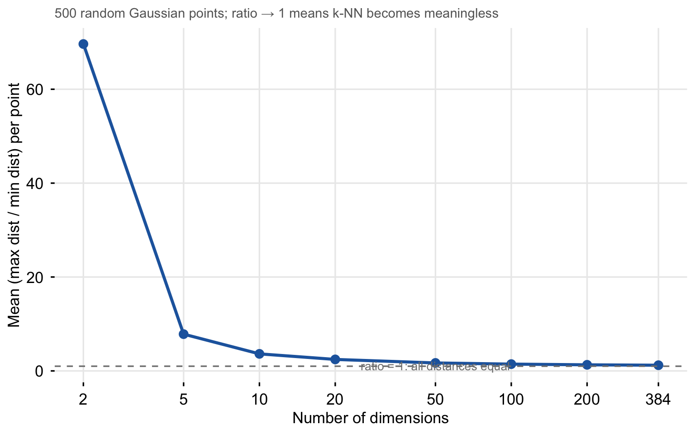
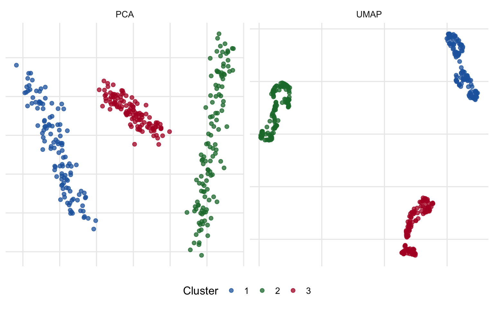
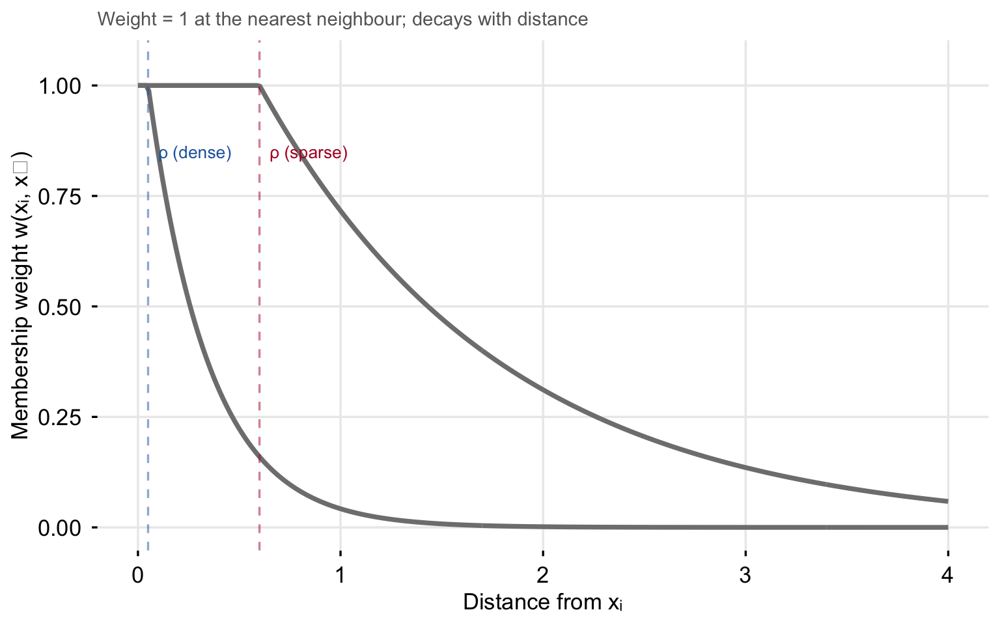
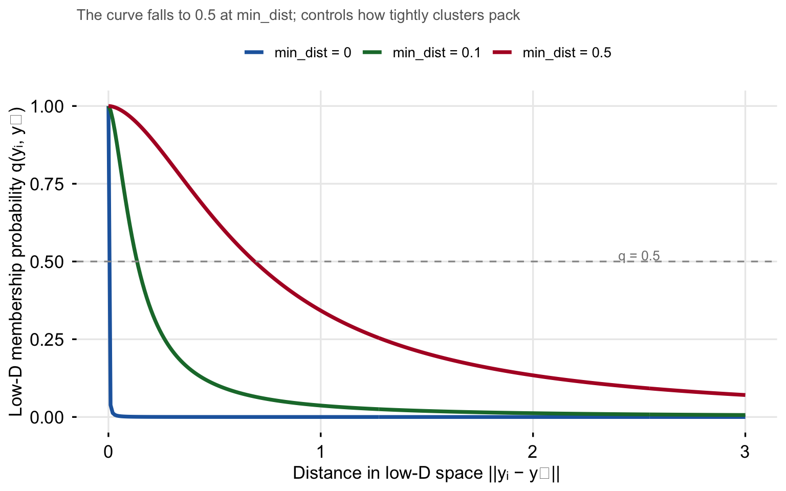

A step-by-step technical walkthrough with illustrations
Author
J.P.G. van der Pol
Published
July 17, 2026
UMAP — Uniform Manifold Approximation and Projection — is a non-linear dimensionality reduction algorithm that compresses high-dimensional data into a low-dimensional space while preserving as much of the local and global structure as possible.
In the Rhobots pipeline, UMAP sits between the embedding step and HDBSCAN: 384-dimensional sentence embeddings are first compressed to 5 dimensions by UMAP, and HDBSCAN then finds clusters in that 5-D space. The compression is necessary because HDBSCAN’s distance computations become unreliable above roughly 20 dimensions (the curse of dimensionality).
This page walks through every step of the UMAP algorithm, explains each parameter, and describes the specific choices made in Rhobots.
1 Why Dimensionality Reduction?
In very high-dimensional spaces an uncomfortable thing happens: distances between points converge. A random point becomes roughly equidistant from all other points, which means nearest-neighbour queries stop being informative — every point is equally “close” to every other.
Show code
set.seed(1)dims <-c(2, 5, 10, 20, 50, 100, 200, 384)ratios <-sapply(dims, function(d) { X <-matrix(rnorm(500* d), 500, d) D <-as.matrix(dist(X))diag(D) <-NAmean(apply(D, 1, max, na.rm =TRUE) /apply(D, 1, min, na.rm =TRUE))})ggplot(data.frame(d = dims, r = ratios), aes(d, r)) +geom_line(colour ="#2166AC", linewidth =1.2) +geom_point(colour ="#2166AC", size =3) +geom_hline(yintercept =1, linetype ="dashed", colour ="grey50") +annotate("text", x =50, y =1.08, label ="ratio = 1: all distances equal",colour ="grey50", size =3.5) +scale_x_log10(breaks = dims, labels = dims) +labs(x ="Number of dimensions", y ="Mean (max dist / min dist) per point",subtitle ="500 random Gaussian points; ratio → 1 means k-NN becomes meaningless") +theme(axis.text =element_text(), axis.ticks =element_line())

The curse of dimensionality. As the number of dimensions grows, the ratio of maximum to minimum pairwise distance collapses toward 1 — all points become equidistant. Nearest-neighbour structure dissolves.
At 384 dimensions (the output of all-MiniLM-L6-v2), the distance ratio is already dangerously low. UMAP addresses this by projecting into a space where nearest-neighbour structure is preserved but distances are interpretable.
Why not PCA? Principal Component Analysis finds the directions of maximum variance in the data. It is linear — it can only rotate and project, not bend or fold the data. Structure that is non-linear (clusters connected through a curved manifold, for instance) is not captured.
Show code
set.seed(42)n_each <-120# Three clusters, each on a 2-D curved submanifold of 50-D spacemake_cluster <-function(n, offset, seed) {set.seed(seed) t1 <-runif(n, -pi, pi) t2 <-runif(n, -1, 1) base <-cbind(t1, t2) # n x 2 rot <-qr.Q(qr(matrix(rnorm(50*2), 50, 2))) # 50 x 2 orthonormalsweep(base %*%t(rot), 2, offset, "+") +# n x 50matrix(rnorm(n *50, 0, 0.15), n, 50)}Xhd <-rbind(make_cluster(n_each, c(3, 0, rep(0, 48)), 1),make_cluster(n_each, c(0, 3, rep(0, 48)), 2),make_cluster(n_each, c(0, 0, rep(0, 48)), 3))labs_hd <-rep(c("1","2","3"), each = n_each)# PCA to 2-Dpca_2d <-prcomp(Xhd, center =TRUE, scale. =FALSE)$x[, 1:2]# UMAP to 2-Dumap_2d <-umap(Xhd, n_neighbors =15, n_components =2,min_dist =0.1, metric ="euclidean",verbose =FALSE, seed =42)df_pca <-data.frame(x = pca_2d[,1], y = pca_2d[,2], label = labs_hd, method ="PCA")df_umap <-data.frame(x = umap_2d[,1], y = umap_2d[,2], label = labs_hd, method ="UMAP")both <-rbind(df_pca, df_umap)ggplot(both, aes(x, y, colour = label)) +geom_point(size =1.8, alpha =0.75) +facet_wrap(~method, scales ="free") +scale_colour_manual(values = PAL) +labs(x =NULL, y =NULL, colour ="Cluster") +theme(axis.text =element_blank())

PCA (left) vs UMAP (right) on a 50-dimensional dataset containing three clusters embedded on non-linear 2-D manifolds. PCA mixes the clusters; UMAP separates them.
2 The Manifold Hypothesis
UMAP’s mathematical foundation is the manifold hypothesis: data in high-dimensional space does not fill that space uniformly — it lies on (or near) a lower-dimensional manifold embedded within it.
A manifold is a surface that locally resembles flat Euclidean space but can have global curvature. The surface of a sphere is a 2-D manifold embedded in 3-D space. The pages of a curled sheet of paper form a 2-D manifold in 3-D space.
A 1-D manifold (helix) embedded in 3-D space. Each point is described by three coordinates, but the intrinsic structure is one-dimensional: position along the helix. UMAP recovers this 1-D structure.
For sentence embeddings, the manifold hypothesis says: although documents are represented as 384-dimensional vectors, the semantic structure of the corpus occupies a much lower-dimensional manifold. Documents about the same topic cluster together on this manifold, regardless of their literal token overlap.
3 The Four Algorithm Steps
UMAP builds its embedding in four stages.
Step
What it computes
1
k-nearest-neighbour graph — who is close to whom in high-D?
2
Fuzzy membership weights — how strongly is each pair connected?
3
Low-D initialisation — a starting layout for optimisation
4
Stochastic gradient descent — push the low-D layout to match the high-D weights
4 Step 1: The k-Nearest-Neighbour Graph
UMAP begins by finding the \(k\) nearest neighbours of every point in high-dimensional space using the chosen metric. This produces a sparse graph where each point is connected to at most \(k\) others.
The graph represents local structure: two points are connected if and only if they are nearby in the original high-D space. Global structure will emerge in Step 4 through the optimisation.
k-nearest-neighbour graph on a small 2-D dataset (n_neighbors = 5). Each point is connected to its 5 closest neighbours. The graph is directed (arrows) before symmetrisation. Dense regions form tight cliques; sparse regions have longer, weaker connections.
5 Step 2: Fuzzy Membership Weights
Raw distances are not directly usable because data density varies across the space. UMAP converts each edge distance into a fuzzy membership weight that accounts for local density.
For point \(x_i\), define:
\[\rho_i = \min_{j \in N_k(x_i)} d(x_i, x_j)\]
the distance to the nearest neighbour (not the \(k\)-th). This anchors the local scale: a point deep in a dense cluster has a small \(\rho_i\); an isolated point has a large one.
The membership weight of the edge from \(x_i\) to neighbour \(x_j\) is then:
where \(\sigma_i\) is a per-point bandwidth calibrated so that the sum of outgoing weights equals \(\log_2(k)\). Intuitively: the nearest neighbour always gets weight 1; further neighbours get exponentially lower weights; the rate of decay is faster in dense regions (small \(\sigma_i\)) and slower in sparse ones (large \(\sigma_i\)).
After computing directed weights \(w_{ij}\) and \(w_{ji}\) for each edge, UMAP symmetrises the graph:
This is the union of two fuzzy sets: if either direction is confident the edge exists, it is retained.
Show code
sigma_dense <-0.3sigma_sparse <-1.2rho_dense <-0.05rho_sparse <-0.60weight_fn <-function(d, rho, sigma) {ifelse(d <= rho, 1, exp(-(d - rho) / sigma))}d_seq <-seq(0, 4, length.out =300)wd <-data.frame(d =rep(d_seq, 2),w =c(weight_fn(d_seq, rho_dense, sigma_dense),weight_fn(d_seq, rho_sparse, sigma_sparse)),region =rep(c("Dense region (small σ)", "Sparse region (large σ)"), each =300))ggplot(wd, aes(d, w, colour = region)) +geom_line(linewidth =1.3) +geom_vline(xintercept = rho_dense, linetype ="dashed",colour = PAL["1"], alpha =0.5) +geom_vline(xintercept = rho_sparse, linetype ="dashed",colour = PAL["3"], alpha =0.5) +annotate("text", x = rho_dense +0.05, y =0.85,label ="ρ (dense)", colour = PAL["1"], hjust =0, size =3.5) +annotate("text", x = rho_sparse +0.05, y =0.85,label ="ρ (sparse)", colour = PAL["3"], hjust =0, size =3.5) +scale_colour_manual(values =c("Dense region (small σ)"= PAL["1"],"Sparse region (large σ)"= PAL["3"])) +scale_y_continuous(limits =c(0, 1.05)) +labs(x ="Distance from xᵢ", y ="Membership weight w(xᵢ, xⱼ)",colour =NULL,subtitle ="Weight = 1 at the nearest neighbour; decays with distance") +theme(axis.text =element_text(), axis.ticks =element_line(),legend.position ="top")

Fuzzy membership weight as a function of distance from point \(x_i\). The curve shifts right in sparse regions (large \(\rho_i\), slow decay) and left in dense regions (small \(\rho_i\), fast decay). This normalises for local density.
6 Step 3: Initialising the Low-D Embedding
Before optimisation can start, every point needs an initial position in the low-D target space.
The default initialisation (init = "spectral") uses the eigenvectors of the graph Laplacian of the symmetrised kNN graph. This is the same computation as spectral clustering and gives a layout that already reflects the large-scale connectivity — clusters are roughly in the right neighbourhood even before any gradient descent.
An alternative is init = "random", which places points uniformly at random and relies entirely on the subsequent optimisation. Spectral initialisation usually converges faster and produces more reproducible results.
Spectral initialisation (left) vs random initialisation (right) before any gradient descent, on the 3-cluster 50-D dataset. Spectral already separates the clusters; random requires more SGD iterations to converge.
7 Step 4: Stochastic Gradient Descent
The final — and most expensive — step optimises the low-D positions to match the high-D membership weights.
Low-D membership. For two points \(y_i\) and \(y_j\) in the low-D embedding, the probability that they are connected is modelled with a curve shaped by min_dist and spread:
\[q_{ij} = \Bigl(1 + a \,\|y_i - y_j\|^{2b}\Bigr)^{-1}\]
The parameters \(a\) and \(b\) are fitted from min_dist and spread so that the curve falls to 0.5 at distance min_dist. Small min_dist → steep curve → points are either very close or very far. Large min_dist → shallow curve → points can sit at intermediate distances.
Cross-entropy loss. UMAP minimises the cross-entropy between the high-D weights \(w_{ij}\) and the low-D probabilities \(q_{ij}\):
The first term is an attractive force: edges with high \(w_{ij}\) (close pairs in high-D) are pulled together in the low-D layout. The second term is a repulsive force: pairs with low \(w_{ij}\) (far apart in high-D) are pushed apart. UMAP uses negative sampling for the repulsive term — it samples random non-edge pairs rather than iterating over all \(O(n^2)\) pairs, which keeps the per-iteration cost linear in \(n\).
Show code
q_curve <-function(d, min_dist, spread =1) {# Approximate a,b via a simple fit used in uwot b <-0.8+0.15* min_dist a <-1/ (2* min_dist^(2*b) * b)1/ (1+ a * d^(2*b))}d_seq2 <-seq(0, 3, length.out =300)md_vals <-c(0.0, 0.1, 0.5)q_df <-do.call(rbind, lapply(md_vals, function(md) {data.frame(d = d_seq2,q =q_curve(d_seq2, max(md, 0.001)),md =paste0("min_dist = ", md))}))q_df$md <-factor(q_df$md, levels =paste0("min_dist = ", md_vals))ggplot(q_df, aes(d, q, colour = md)) +geom_line(linewidth =1.3) +geom_hline(yintercept =0.5, linetype ="dashed", colour ="grey60") +annotate("text", x =2.5, y =0.52, label ="q = 0.5",colour ="grey50", size =3.5) +scale_colour_manual(values =c("#2166AC","#1B7837","#B2182B")) +scale_y_continuous(limits =c(0, 1)) +labs(x ="Distance in low-D space ||yᵢ − yⱼ||",y ="Low-D membership probability q(yᵢ, yⱼ)",colour =NULL,subtitle ="The curve falls to 0.5 at min_dist; controls how tightly clusters pack") +theme(axis.text =element_text(), axis.ticks =element_line(),legend.position ="top")

The low-D membership curve \(q_{ij}\) for three values of min_dist. Small min_dist (blue) creates a sharp threshold — points are either touching or repelled. Large min_dist (red) allows a gradual spread.
Gradient descent runs for n_epochs iterations (default 500 for small data, 200 for large). The learning rate decays linearly over epochs so early iterations make large moves to find the right neighbourhood structure and later iterations refine local placement.
8 Parameters in Depth
8.1 n_neighbors — Local vs Global Structure
n_neighbors (\(k\)) is the most important UMAP parameter. It controls how large a neighbourhood each point considers when building the high-D graph.
Small \(k\) (e.g. 5): each point only looks at its immediate neighbours. The embedding captures fine local structure; clusters may fragment and distant-but-related clusters may disconnect.
Large \(k\) (e.g. 50): each point considers a wide neighbourhood. The embedding captures broad global structure; fine internal sub-clusters are smoothed away.
Effect of n_neighbors on the same 50-D dataset. Small values expose fine structure; large values give a smoother, more globally coherent layout.
Practical guidance for Rhobots: The default n_neighbors = 15 works well for most corpora. Increase toward 20–30 for very large corpora (n > 10,000) where you want the manifold to reflect broad thematic similarity rather than narrow document proximity.
8.2 n_components — Output Dimensionality
n_components controls the number of dimensions in the output space.
The two common choices in a BERTopic pipeline serve different purposes:
n_components
Purpose
2
Visualisation — human-readable scatter plots
5(Rhobots default)
HDBSCAN input — more structure preserved, less distance distortion
10–20
Richer HDBSCAN input for very large or complex corpora
Compressing all the way to 2-D for HDBSCAN input is tempting but problematic: UMAP must throw away a lot of information to fit into two dimensions, and the distortions can split coherent clusters or merge distinct ones. Five dimensions preserves much more of the manifold structure while still being far below 384.
HDBSCAN on UMAP output at different n_components. 2-D (left) produces fragmented clusters; 5-D (right) recovers the correct three-cluster structure. (Both scatter plots show a final 2-D UMAP for visualisation only.)
8.3 min_dist — How Tightly Points Cluster
min_dist sets the minimum distance between points in the low-D output. It controls the a and b parameters of the \(q_{ij}\) curve (Section 7).
min_dist = 0.0: no minimum — points can be placed right on top of each other. Produces the tightest possible clusters. This is what Rhobots uses for the 5-D HDBSCAN input: you want points in the same topic to be as close as possible.
min_dist = 0.1(typical visualisation default): a small gap keeps individual points distinguishable in a scatter plot.
min_dist > 0.5: points spread out; cluster structure softens. Useful when you care about global topology more than local clustering.
Effect of min_dist on the same dataset. Low values (top left) compress clusters into tight blobs; high values (bottom right) spread the embedding out.
8.4 metric — Distance in High-D Space
The metric argument determines how distances between points are measured in the original high-D space before any compression.
Metric
Formula
Best for
"euclidean"
\(\sqrt{\sum(x_i - y_i)^2}\)
Raw numeric features
"cosine"
\(1 - \frac{x \cdot y}{\|x\|\|y\|}\)
Text embeddings (ignores magnitude)
"manhattan"
\(\sum\|x_i - y_i\|\)
Sparse or count data
"correlation"
\(1 - \text{Pearson}(x, y)\)
Time series, profiles
Why cosine for text embeddings? Sentence transformer models output vectors whose direction encodes meaning. Two sentences about the same topic get vectors pointing in the same direction, even if one sentence is short (small magnitude) and one is long (large magnitude). Cosine similarity ignores magnitude and only compares direction, so it captures semantic similarity more reliably than Euclidean distance.
Cosine vs Euclidean metric on the same 50-D corpus-like data. Cosine separates the three thematic clusters more cleanly because the cluster structure is directional, not based on absolute vector magnitudes.
8.5 seed — Reproducibility
UMAP involves three stochastic components:
Approximate nearest neighbours (if using the default nn_method = "annoy")
Spectral initialisation (uses random starting vectors for eigenvector solving)
Negative sampling during SGD
Setting seed passes the same value to all three sources. Two runs with the same data, parameters, and seed will produce identical embeddings up to floating-point precision. Without a seed, the embedding topology is preserved but the overall rotation and reflection may differ between runs — colours in cluster scatter plots shift around but cluster shapes remain the same.
Rhobots passes seed through to uwot::umap() automatically when you set seed in fit_bertopic().
9 What UMAP Preserves (and What It Doesn’t)
Preserved ✓
Local neighbourhood structure: if \(x_i\) and \(x_j\) are close in high-D, they will be close in the embedding.
Cluster separation: well-separated clusters in high-D appear well-separated in the embedding.
Approximate topology: the number of connected components and the broad shape of the manifold are maintained.
Not Preserved ✗
Distances between clusters: the absolute distances between clusters in the low-D embedding are not meaningful. Two clusters that appear far apart in the UMAP plot are not necessarily more different than two clusters that appear close — the optimisation only controls local structure reliably.
Cluster sizes: a larger cluster in the embedding does not mean more documents; the number of points is the same regardless of visual area.
Density comparisons across clusters: UMAP normalises local density (through \(\sigma_i\)), so a tight-looking cluster in the plot might not be denser than a spread-out cluster in the original space.
Warning
Inter-cluster distances in UMAP plots are not interpretable.
It is tempting to conclude that clusters that are visually adjacent in a 2-D UMAP scatter are semantically more similar. This is unreliable. For meaningful cluster-to-cluster distance, compute the centroid distance in the original embedding space (384-D), not in the UMAP projection.
10 UMAP vs PCA
PCA
UMAP
Transformation
Linear
Non-linear
Preserves
Global variance
Local neighbourhood structure
Deterministic
Yes (up to sign)
No (stochastic; set seed)
Scales to large n
Yes (\(O(nd^2)\))
Moderate (\(O(n^{1.14})\) approx.)
Interpretable axes
Yes (principal components)
No
Handles manifold structure
No
Yes
Good for clustering input
Sometimes
Yes (with min_dist = 0)
Good for visualisation
Sometimes
Yes
PCA remains the right choice when you need interpretable axes (factor loadings, explained variance) or when you are reducing from a moderate number of dimensions (e.g., 50 → 10) as a cheap preprocessing step. UMAP is better when you need to preserve cluster structure for a downstream clustering step or produce a human-readable scatter plot.
11 Using UMAP in Rhobots
In Rhobots, UMAP is called internally by fit_bertopic() and sweep_topics(). The relevant arguments are:
Show code
library(Rhobots)# Default UMAP settings (n_neighbors=15, n_components=5, min_dist=0, cosine)fit <-fit_bertopic(docs = docs,embeddings = emb)# Adjust UMAP parametersfit <-fit_bertopic(docs = docs,embeddings = emb,umap_n_neighbors =20L, # more global structureumap_n_components =10L, # richer HDBSCAN input for large corpusumap_min_dist =0.0, # tight clusters (always use 0 for HDBSCAN)seed =42L # reproducibility)# For visualisation only — 2-D UMAP after fittinglibrary(uwot)viz <-umap(emb,n_neighbors =15,n_components =2,min_dist =0.1, # spread out for readabilitymetric ="cosine",seed =42L)
Note
Two-stage UMAP in practice.
Rhobots uses a single UMAP call to 5-D for clustering. If you also want a 2-D visualisation, compute it as a separate UMAP call from the original embeddings with n_components = 2 and min_dist = 0.1. Do not project the 5-D output into 2-D — you would be reducing already-reduced data and compounding distortions.
Why these defaults?
Parameter
Rhobots default
Reason
n_components
5
Preserves more manifold structure than 2-D; well below 384-D curse-of-dimensionality threshold
min_dist
0.0
Maximises cluster tightness for HDBSCAN; no need to keep points visually separated
metric
"cosine"
Sentence embeddings encode meaning in direction, not magnitude
n_neighbors
15
Balances local detail and global coherence for typical corpus sizes
seed
user-supplied
Reproducibility of the full pipeline
Summary
Concept
What it does
Key parameter
kNN graph
Encodes who is close to whom in high-D
n_neighbors, metric
Fuzzy membership weights
Converts distances to connectivity, normalised by local density
n_neighbors
Low-D curve \(q_{ij}\)
Controls how tightly points pack in the output
min_dist, spread
SGD optimisation
Minimises cross-entropy between high-D weights and low-D probabilities
n_epochs, learning_rate
Output space
The compressed representation fed to HDBSCAN or plotted
n_components
Three rules of thumb for Rhobots:
Set metric = "cosine" for all sentence-embedding inputs — it is the default and should stay that way unless you switch to a different encoder family.
Use min_dist = 0.0 when the UMAP output will be passed to HDBSCAN; use min_dist = 0.1–0.3 when producing scatter plots for humans.
Increase n_components to 8–10 if sweep_topics() consistently finds fewer clusters than you expect — the 5-D projection may be discarding topic-discriminating structure in very large or heterogeneous corpora.